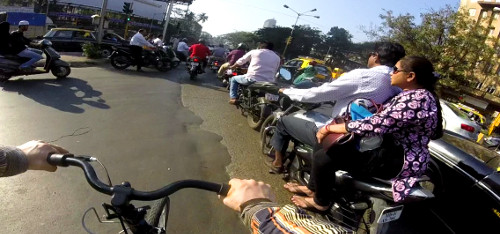
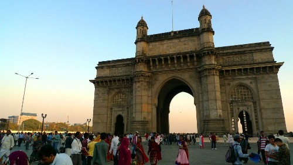

An early-morning flight brought me to the city of Mumbai, where it was still dark outside. Plenty time for building-up my folding bicycle, that had survived the flight, packed in a large backpack. Quite funny that the police in front of the airport where the most interested in my proceedings and commenting all the time about how much they liked the bike.
When daylight came, it was time to dive into the Mumbai Monday-morning rush-hour, which went surprisingly easy. This huge traffic jam looks like an absolute chaos from a distance, but from within it is not as bad. People are actually looking what others are doing: If you make a move in a direction, they give you space to do so. You should act predictable though. Indicators are not used here, everybody just sounds the horn all the time so that others know where they are. It works, but makes a hell of a noise…
It was not easy to fine the way close to the airport (I have seen many corners of the slums surrounding it), but eventually thanks to many pointing fingers I found the way to the highway South and to the hotel, very close to the Gateway to India (and no, not the Taj Mahal Hotel):
